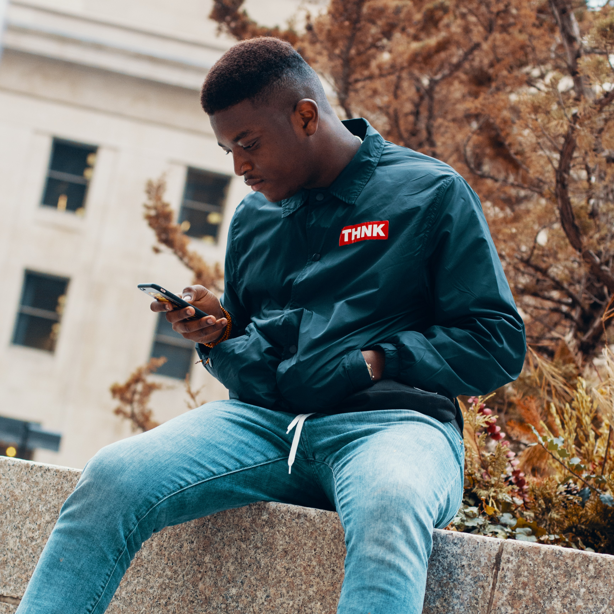
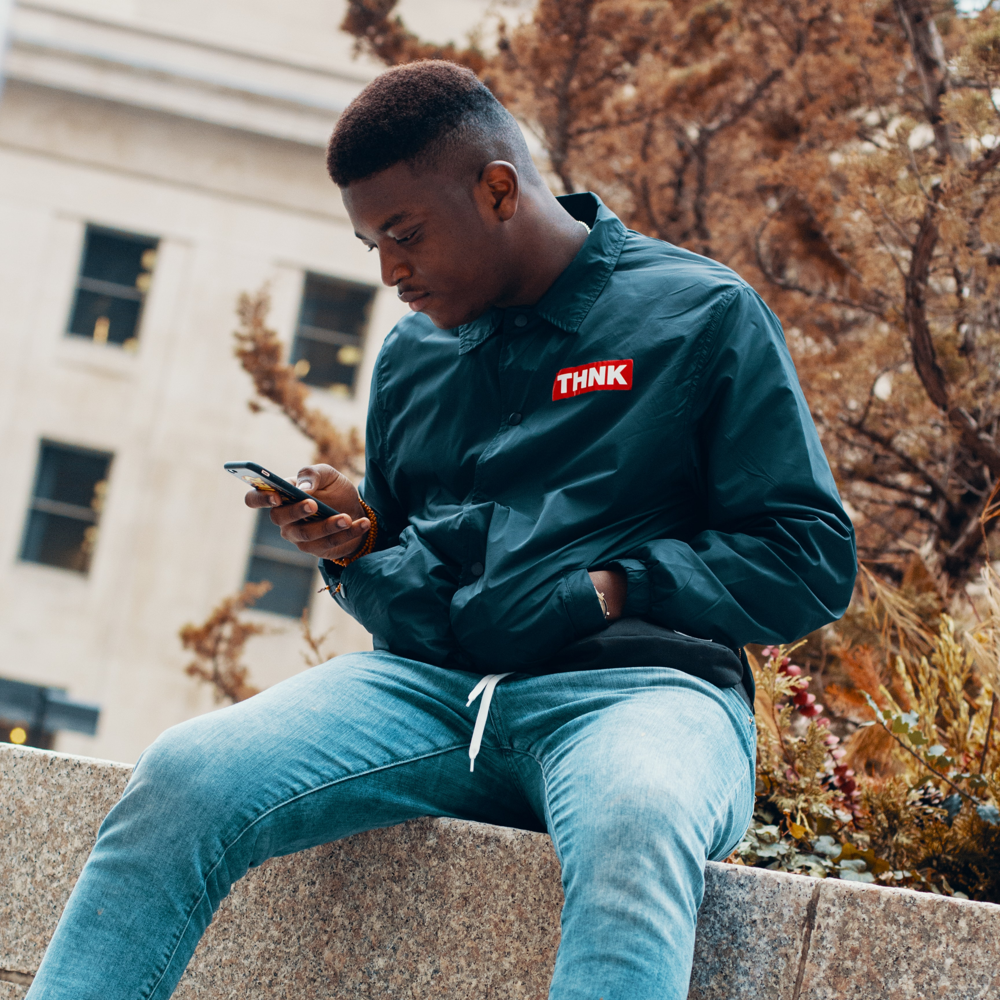

This is a webpage for an imaginary book and coffee shop called The Cozy Corner. It has been created with Flexbox and CSS Grid. Please feel free to view the repository for more information.
Projects
Flexbox Business Webpage

Photo by Aga Putra on Unsplash
The Cozy Corner App Prototype
This is the prototype for The Cozy Corner's app. Customers can use this app to order books and hot drinks online and get them delivered to their doorstep. It was created with Figma.
Coffee Chatbot

Photo by Timi David on Unsplash
The Cozy Corner App will be powered by a chatbot created with Python. Please feel free to view the repository for more information.
This is the prototype for The Cozy Corner's app. Customers can use this app to order books and hot drinks online and get them delivered to their doorstep. It was created with Figma.
Coffee Chatbot

Photo by Timi David on Unsplash
The Cozy Corner App will be powered by a chatbot created with Python. Please feel free to view the repository for more information.
The Cozy Corner App will be powered by a chatbot created with Python. Please feel free to view the repository for more information.